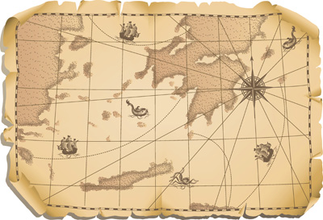
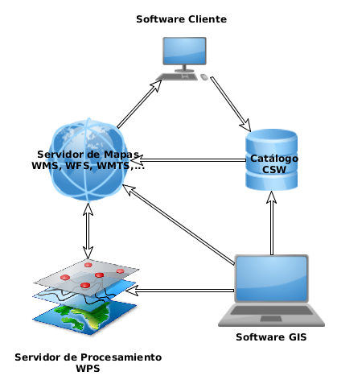
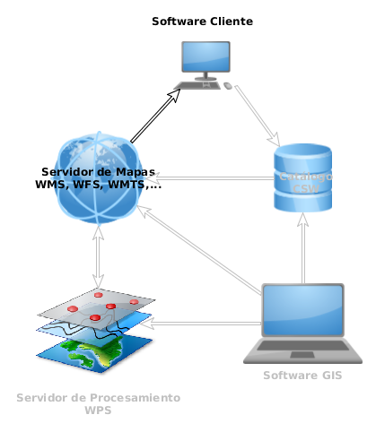

IDEs y Publicación de información espacial
Cómo publicar datos geográficos en internet
María Arias de Reyna (@GeoCat bv)
Quién soy yo y por qué hablo de esto
¿Qué es un SIG?
IDE (SDI)
¿Cómo empiezo con los mapas?
OsGeo (la comunidad GIS)
GeoTalleres (geoinquietos en acción)

Selección Software GIS
Catálogo/GeoPortales
Procesamiento
OsGeo Live "DVD"
Toca ensuciarse
Fuentes de datos
OSM con OverPass Turbo
Nunca usar GMaps para proyectos serios. No es libre.

OSM: fuentes
OverPass Turbonode
[amenity=drinking_water]
({{bbox}});
out;
OpenData Euskadi
Trabajando con CartoDB
BaseMap
Category
Cluster
Heat Map
...